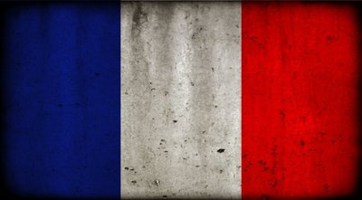
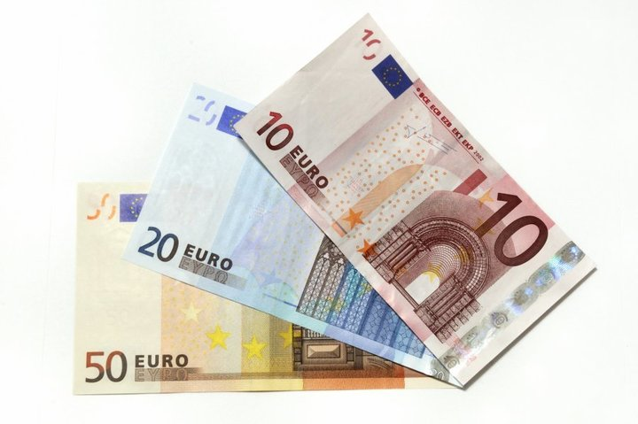

France
 Франция — государство в Западной Европе. На западе и севере территория Франции омывается водами Атлантического океана и пролива Ла-Манш, на юге — Средиземным морем, поэтому морские границы Франции могут быть условно разделены на три части: побережье Средиземноморья, прибрежная полоса Бискайского залива и Атлантики и берега пролива Ла-Манш.
На юго-западе Пиренеи отделяют республику от Испании, на юго-востоке Франция граничит с Италией. Горные массивы Альп и Юра создают естественную преграду на востоке. Здесь Франция граничит со Швейцарией, Германией, Люксембургом и Бельгией.
Частью территории Франции является остров Корсика в Средиземном море. Кроме того, Франция владеет обширными заморскими территориями, к которым относится ряд островов в Тихом океане. Это Новая Каледония, Французская Полинезия. Франции принадлежат также острова Уоллис, Футуна, Южные земли и Французская Антарктика.
Климат
Над территорией Франции происходит непрерывная борьба между массами океанического воздуха с запада, континентального – с востока и средиземноморского – с юга. Климат любой части страны зависит от преобладания той или иной тенденции, хотя, естественно, сказывается также влияние высоты и местных условий.
Океаническое влияние проявляется в установлении теплой влажной погоды. Западные воздушные массы, проходя над теплыми водами Северо-Атлантического течения (продолжение Гольфстрима), насыщаются влагой. При прохождении над океаном этот воздух летом охлаждается, а зимой прогревается. В результате при распространении западных воздушных масс редко наблюдаются экстремальные температуры. Например, в Бресте средняя температура января 7° С, июля – 17° С. Здесь влажно, за год насчитывается 185 дней с осадками, а общая сумма осадков достигает 840 мм. Бoльшая часть осадков выпадает в виде непрерывного моросящего дождя. Небо обычно затянуто облаками, но снегопады и морозы бывают редко.
Средиземноморское влияние распространяется на приморскую зону шириной 160 км на юге Франции. Зимы здесь мягкие и сырые, хотя бoльшая часть осадков выпадает в виде непродолжительных ливней, а в промежутках между ними стоит ясная погода. Лето жаркое и сухое. Например, в Марселе средняя температура января 7° С, а июля 22° С, хотя днем температура иногда повышается до 38° С. Средняя годовая сумма осадков составляет 580 мм, в году насчитывается 95 дней с осадками. Мистраль, холодный ветер, иногда дующий с севера, особенно зимой, приносит необычно холодную погоду на средиземноморское побережье Франции.
Банки и валюта
Денежной единицей во Франции является Евро (Euro), равный 100 центам. В обращении находятся банкноты номиналом в 5, 10, 20, 50, 100, 200 и 500 евро, а также монеты номиналом в 1, 2, 5, 10, 20 и 50 центов.
Рекомендуется позаботиться о приобретении валюты еще до въезда в страну. Наиболее выгодный курс обмена предлагает "Банк де Франс" и обменные пункты с табличкой "No Commission" ("без комиссии"). Киоски в аэропортах, отелях и на вокзалах предлагают не самый выгодный курс, плюс берется процент за операцию, но часы их работы весьма удобны. За обмен долларов большинство обменных пунктов берет 15% комиссионных, хотя это нигде не указано.
Общение
Официальный язык Франции – французский. Помимо него в стране говорят на десятках региональных диалектах и языков эмигрантов. Если приехав в любую Европейскую страну, владение английским языком будет считаться высшим пилотажем для русского туриста, то во Франции к этому относятся даже с пренебрежением.
И даже знающий английский язык француз принципиально откажется общаться с Вами на любом другом языке, кроме своего родного. Более того, каждый из них сердечно полагает, что знание хотя бы основных элементарных слов и фраз на французском языке – просто обязательно!
 Защищено АО «Лаборатория Касперского», 2017
Защищено АО «Лаборатория Касперского», 2017